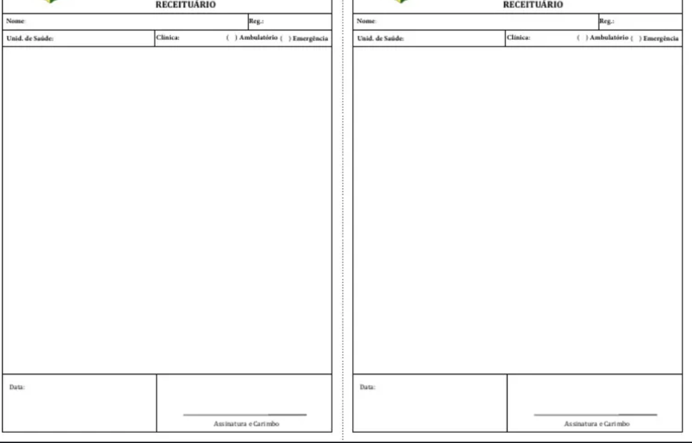

Os momentos da aula
- Apresentação geral. Quem somos e o que a aula faz.
- O site. Onde o material fica, e continua ficando depois da aula.
- Simulações — primeira rodada. Pré-aula.
- Aula — Hipertensão. Do diagnóstico ao tratamento.
- Aula — Risco cardiovascular. Da estratificação à receita no papel.
- Simulações — segunda rodada. Pós-aula.
- Extra. Simulações extras, feedback em sala e ideias de ajuste.
1. Apresentação geral
- A Escola de Pacientes: ensino, pesquisa e extensão em saúde, ativa desde 2016 na UnB e na rede do DF.
- O que a aula de hoje cobre: hipertensão arterial sistêmica, do diagnóstico ao tratamento, e o risco cardiovascular que decide a conduta.
- Como o encontro é organizado: duas rodadas de simulação, uma antes e outra depois da aula, com as médias comparadas no fim.
- O que a primeira rodada é e o que ela não é: linha de base do grupo, não avaliação individual.
2. O site
- O material da aula não se esgota hoje: fica publicado e aberto.
- Cada tema tem página própria, com slides, capítulo do Tratado, PACK, orientações ao paciente e a pasta do Drive.
- Esta página do plano fica no ar depois da aula, com os links todos.
3. Simulações — primeira rodada (pré-aula)
- O que é o SimulaPacientes: paciente digital, consulta conduzida por escrito, devolutiva item a item sobre a própria conduta.
- Por que a consulta é escrita, e o que o retorno mostra ao final.
- Código da turma.
- Primeira rodada, quinze minutos cronometrados — o QR code no fim da página abre o caso.
- O que esta rodada é: linha de base do grupo, antes da aula.
4. Aula — Hipertensão
5. Aula — Risco cardiovascular
- Folha em branco. Três receitas na sequência do PACK, sem consultar os slides: a primeira com enalapril em dose baixa, junto do pedido de exames de estratificação; a segunda trocando para a losartana, quando aparece a tosse; a terceira somando um segundo anti-hipertensivo ao primeiro. As folhas trocam de mão e a correção é feita contra o fluxograma.

O que a norma exige que esteja na receita. Pela Lei nº 5.991/1973, art. 35, na redação dada pela Lei nº 14.063/2020, só se avia a receita que esteja escrita no vernáculo, sem abreviações e de forma legível, na nomenclatura e nas unidades oficiais (inciso I); que traga o nome e o endereço residencial do paciente e, expressamente, o modo de usar a medicação (II); e que traga a data, a assinatura do profissional de saúde, o endereço do consultório ou da residência e o número de inscrição no conselho profissional (III). O mesmo artigo diz que a receita vale em todo o território nacional, seja qual for o ente que a emitiu (§ 1º), e que a receita eletrônica só vale com assinatura eletrônica avançada ou qualificada — qualificada obrigatoriamente quando o medicamento é de controle especial (§§ 2º e 3º). No SUS, a prescrição adota obrigatoriamente a denominação genérica: DCB ou, na falta dela, DCI (Lei nº 9.787/1999). E medicamento sob controle especial não vai nesta folha: vai em Notificação de Receita ou em Receita de Controle Especial em duas vias, no modelo da Portaria SVS/MS nº 344/1998.
menu_bookPasso a passo do tratamento — transcrito do PACK Brasil 2025, p. 145 ("Hipertensão: tratamento"). O PDF completo está na página de Hipertensão.
-
Maneje o risco cardiovascular
- Apoie para mudança (PACK p. 17) e maneje os fatores de RCV modificáveis (p. 136) por 3 meses.
- Após 3 meses, se a PA não estiver controlada, adicione o passo 2.
-
Hidroclorotiazida 25mg/dia ou enalapril 10–40mg/dia
Hidroclorotiazida (HCTZ) 25mg/dia — primeira escolha.
- Prescreva 25mg/dia pela manhã.
- Se DM, DRC, hipertrofia de VE ou IC: inicie com enalapril no lugar da HCTZ e, se a PA não estiver controlada em 4 semanas, adicione HCTZ.
- Não prescreva se gestante, gota, TFGe < 30 ou doença hepática grave. Evite se história atual ou familiar de câncer de pele.
Enalapril 10mg – 40mg/dia — primeira escolha se DM, DRC, hipertrofia de VE ou IC.
- Inicie com 10mg/dia.
- Se a PA não estiver controlada em 4 semanas, adicione HCTZ 25mg/dia. Se já usa enalapril 10mg/dia e HCTZ, aumente para 20mg/dia.
- Se já usa enalapril 20mg/dia, aumente para 20mg cada 12 horas. Se ainda não controlada, adicione o passo 3.
- Não prescreva se gestante ou amamentando, angioedema prévio, TFGe < 30. Não inicie se potássio ≥ 5; pare se ≥ 5,5.
Efeitos adversos. HCTZ: tolerância diminuída à glicose, gota, alterações gastrointestinais, risco de câncer de pele. Enalapril: tosse (substitua por losartana 50–100mg/dia, p. 46), tontura. Se edema de língua, lábios ou face, ou falta de ar: pare o enalapril ou a losartana.
-
Anlodipino 5–10mg/dia
- Se a PA não estiver controlada nos passos 1 e 2 (considere anlodipino também na doença de Raynaud — discuta): inicie com 5mg à noite.
- Se a PA não estiver controlada em 4 semanas, aumente para 10mg/dia. Se ainda não controlada, adicione o passo 4.
- Não prescreva se IC descompensada. Se IC estável, discuta.
Efeitos adversos. Edema em tornozelo, tontura, rubor em face, dor de cabeça, fadiga.
-
Espironolactona 25mg/dia
- Se a PA não estiver controlada nos passos 1, 2 e 3 (ou medicamentos similares) em dose máxima ou tolerada: inicie 25mg/dia. Não prescreva se gestante.
- Se já usa espironolactona e a PA não estiver controlada após 4 semanas, discuta ou encaminhe.
- Monitore potássio (K) e TFGe antes de iniciar e após 2 semanas.
- Se K ≥ 4,5 ou TFGe ≤ 45: não inicie, ou pare, e discuta — considere carvedilol (passo 5) no lugar.
Efeitos adversos. Ginecomastia.
-
Carvedilol 6,25–25mg 12/12h ou propranolol 40–320mg 12/12h
- Se IC estável, cardiopatia isquêmica, taquiarritmia ou contraindicação à espironolactona, e a PA não estiver controlada: prescreva carvedilol 6,25mg cada 12 horas. Aumente cada 4 semanas se a PA não estiver controlada, até 25mg (se > 85kg, 50mg) cada 12 horas.
- Se não tem sinais de IC e tem tremor essencial, hipertireoidismo ou enxaqueca: prescreva propranolol 40mg cada 12 horas no lugar. Aumente cada 4 semanas se a PA não estiver controlada, até 320mg cada 12 horas.
- Não prescreva nenhum dos dois se IC descompensada ou DPOC/asma grave. Se FC < 60 antes do tratamento, discuta.
- Se DPOC ou asma leve a moderada, não prescreva propranolol e discuta o uso de carvedilol ou alternativas.
Efeitos adversos. Sensação de apreensão torácica, fadiga, bradicardia, dor de cabeça, mãos e pés frios, impotência sexual, hipotensão ortostática.
Reavalie o paciente com PA não controlada a cada 4 semanas e o paciente com PA controlada a cada 6 meses.
6. Simulações — segunda rodada (pós-aula)
- Formulário rápido sobre quais inteligências artificiais cada um já usa.
- Segunda rodada, agora com a aula dada.
- As médias das duas rodadas lado a lado, na frente da turma.
- O que a diferença entre elas diz — e o que ela não diz.
7. Extra: simulações extras
- Quem quiser roda casos extras, no ritmo de cada um.
- Feedback extra em sala, sobre o que apareceu nessas rodadas.
- Ideias de ajuste: o que mudar no caso, na rubrica e na própria aula.
Abrir a simulação
Ou abra direto: link da simulação ↗